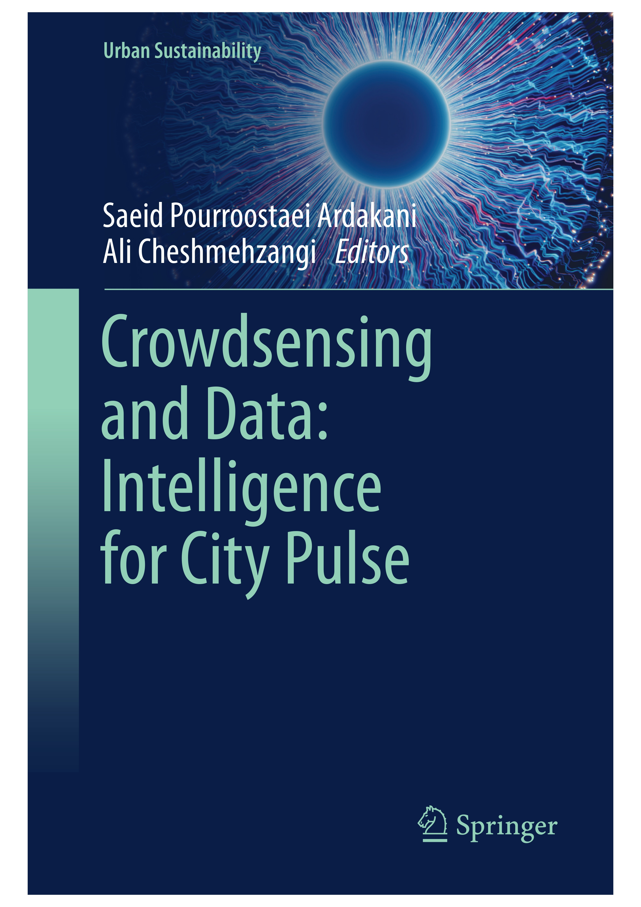

Dr. Saeid Pourroostaei Ardakani
Associate Professor in Computer Science | School of Electronic Engineering and Computer Science |Queen Mary University of London
Associate Professor in Computer Science | School of Electronic Engineering and Computer Science |Queen Mary University of London
Publication Alret April 2026: Our latest research paper "A Systematic Review of Technology-Enhanced Music Learning Models: Impacts on Music Education", has been accepted for publication in Elsevier Computers and Education Open.
Publication Alret March 2026: Our research paper "A Reinforcement Learning Framework for Complex Fire and Rescue Environments", has been accepted for publication in IEEE Transactions on Sustainable Computing.
NEW BOOK Crowdsensing and Data: Intelligence for City Pulse (Springer, Scopus indexed) will be out soon.

Students Accepting PhD and MRes students at Queen Mary University of London.